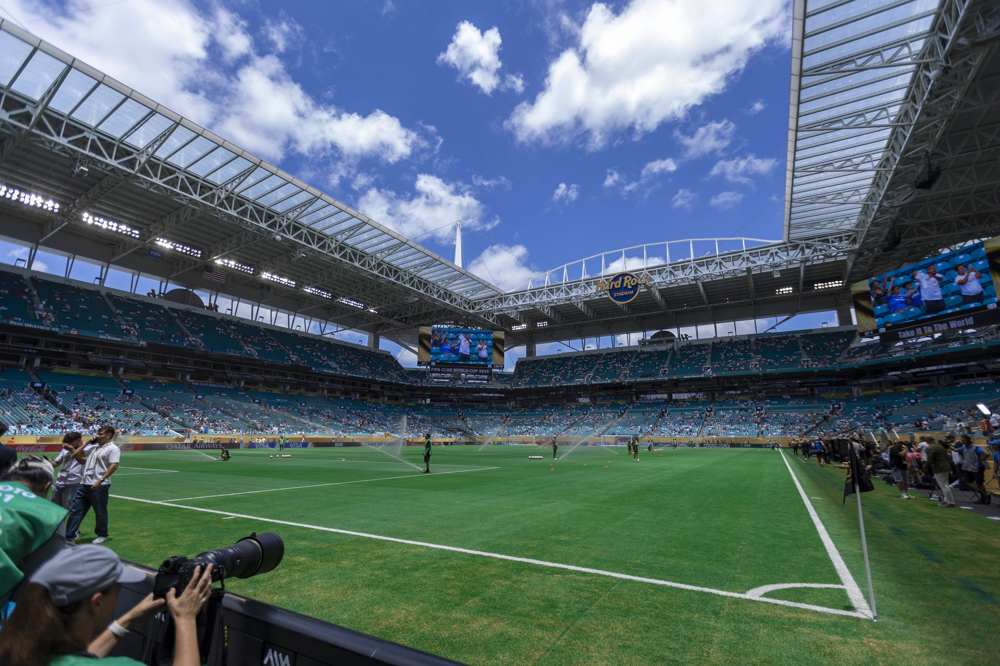
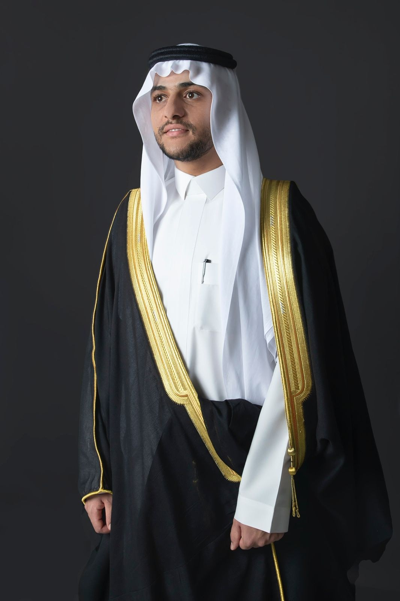
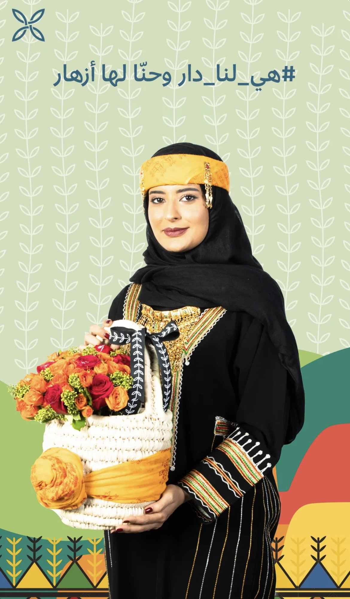
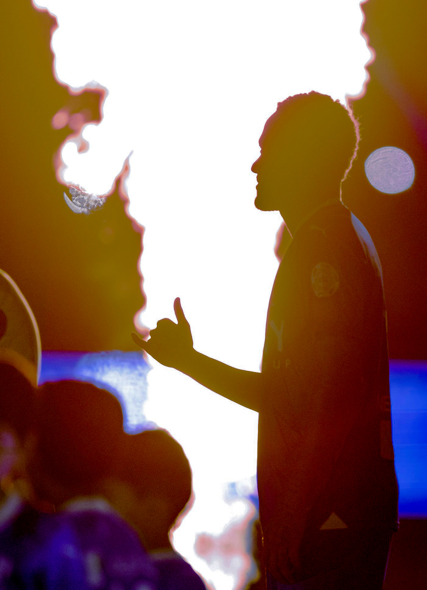

محمد الحصين — مصوّر فوتوغرافي ومنتج بصري

مصوّر فوتوغرافي
الصورة وحدها لغة يفهمها العالم بأكمله — دون ترجمة.

محمد أحمد الحصين
مصوّر فوتوغرافي من محافظة الغاط، يبحث عن الجمال داخل التفاصيل — يحوّل اللحظة إلى قصة، والحركة إلى إحساس.
منذ عام 2011، امتدت تجربته من صخب الملاعب وسرعة الحركة، إلى ملامح الوجوه وأدق التفاصيل، عبر تغطيات ميدانية لفعاليات وبطولات داخل المملكة وخارجها. يمتلك اليوم استديو إنتاج إعلامي متكامل، يقدّم من خلاله حلولاً بصرية في التصوير والإنتاج، بمعايير عالية من الدقة والاهتمام بالتفاصيل.
"كل لقطة عندي تُصنع بروحٍ ترى ما لا تراه العين."

هدف واحد، وقصة كاملة
حين هزّ ماركوس ليوناردو الشباك أمام مانشستر سيتي في كأس العالم للأندية FIFA، لم تكن هناك فرصة لالتقاط لقطة ثانية. لحظة حاسمة واحدة، وإطار تاريخي واحد، يوثّق تفصيلًا لا يتكرر بدقة وهدوء.
أرقام لا تُقال، بل تُرى
- منذ
- 2011
- أكثر من
- 0+ جهة ومؤسسة
- بطولة
- FIFA كأس العالم للأندية
- شراكة
- SPL
أينما تكون القصة، تكون العدسة
معرض، لا أرشيف
كل مشروع هنا يُروى كقصة قائمة بذاتها — لا مجموعة صور، بل لحظة مختارة بعناية.

كأس العالم للأندية FIFA

حضور وهيبة

هوية تجارية
ثقة لا تُشترى





وأكثر من 30 جهة ومؤسسة أخرى داخل المملكة وخارجها.
على أرض الحدث، في كل مرة
- كأس العرب FIFA2026
- كأس آسيا2023
-
بطولات الاتحاد السعودي لكرة القدم
- كأس خادم الحرمين الشريفين
- كأس السوبر السعودي
- الدوري السعودي للمحترفين (SPL)منذ 2013
-
بطولات الاتحادات السعودية
- الاتحاد السعودي لريشة الطائرة
- الاتحاد السعودي لكرة الطاولة
- الاتحاد السعودي لتنس الأراضي
- الاتحاد السعودي للبادل
- كأس السوبر الإيطالي
- كأس السوبر الإسباني
- كأس العالم للأنديةالولايات المتحدة الأمريكية
- كأس آسيا لكرة القدم للمنتخبات 2023قطر
- كأس العرب FIFA 2025قطر
عدستي كما يراها الآخرون
هذه المساحة توثّق منشورات الجهات الرسمية التي استخدمت صوري ضمن تغطياتها الإعلامية، كما ظهرت في حساباتها الرسمية.
خبرتي تمتد من الحركة السريعة في الملاعب، إلى ملامح الوجوه، وصولًا إلى أدق التفاصيل.
لنصنع القصة القادمة
سواء كان مشروعًا رياضيًا كبيرًا، أو حملة تجارية، أو لحظة تستحق أن تُروى — العدسة جاهزة.
راسلني الآن- الموقع
- الرياض، المملكة العربية السعودية
- البريد الإلكتروني
- malhussayyen@gmail.com
